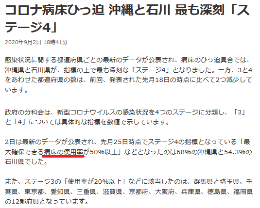

<br><br> # <!-- <div style="border: thin solid; border-radius: 8px; padding: 8px; background: white;"><font color="midnightblue" style="text-transform: none;">--><span style="text-transform: none;">PDFの表データを<br>WebAPI化する話</span><!-- </font></div> --> <br> @furandon_pig<br> <span style="font-size:60%;">https://furandon-pig.github.io/study-memo/docs/tagayas/2020924.html</span><br> <span style="font-size:60%;"><a href="https://tagayas.connpass.com/event/187416/">【タガヤス その17】画面の向こう側に聞かせたいこと</a> (2020/08/06)</span>
### 自己紹介 <table border="0"> <tr> <td> <img src="https://pbs.twimg.com/profile_images/2577120213/74t8gdwg96vj93vg46a4_200x200.png"> </td> <td> <ul> <li><a href="https://twitter.com/furandon_pig">@furandon_pig</a> <li>IwateDevelopersMeetupの方から来ました。 </td> </tr> </table>
### 今日のお話 * PDFで公開されているデータからWebAPIを作成する試みを紹介します。
### 少し前のニュース。 * [コロナ病床ひっ迫 沖縄と石川 最も深刻「ステージ4」](https://www3.nhk.or.jp/news/html/20200902/k10012597151000.html) 
# 病棟の使用率😯
### 病棟の使用率データが欲しい(1/2) * [岩手県新型コロナウイルス感染症対策サイト（非公式）](https://iwate.stopcovid19.jp/) * 少し前の開発コミュニティ内での話題。 * 「病棟数の使用率データも掲載したいね」 * が、対応を思案している状況でした...🥺 * 県の担当者とコンタクトを取る必要がある？
### 病棟の使用率データが欲しい(2/2) * どうやら厚生労働省のWebサイトからデータが取得できそう。 * 都道府県の担当者経由でないと入手できないと思っていました...。 * さっそくデータを見てみましょう。
* [新型コロナウイルス感染症患者の療養状況等及び入院患者受入病床数等に関する調査結果（９月16日０時時点）](https://www.mhlw.go.jp/content/10900000/000674931.pdf)
# PDF形式！😭
### PDFからデータを取り出す * さすがにPDFのままだとデータを扱いづらい...🥺 * 何らかの方法でPDFからテキストデータを抽出する等の前処理が必要。 * [Apache PDFBox](https://pdfbox.apache.org/)で解決できそう
### Apache PDFBox * [Apache PDFBox](https://pdfbox.apache.org/) * PDF操作ライブラリ。OSSで提供されている。 * PDF作成・展開機能があり、PDFからテキストデータを抽出することも可能。 * 今回はPDFBoxを使ってデータの前処理を行ってみます。
### PDFからテキストを抽出するサンプル ```java import java.util.regex.Pattern; import java.util.regex.Matcher; import org.apache.pdfbox.pdmodel.PDDocument; import org.apache.pdfbox.pdmodel.encryption.AccessPermission; import org.apache.pdfbox.text.PDFTextStripper; import java.io.*; public class PDF2TextConverter{ public static void main(String... args) throws IOException { String file_path = args[0]; // PDFをロードし、内容を展開する権限がなかったらエラーにする。 PDDocument document = PDDocument.load(new File(file_path)); AccessPermission ap = document.getCurrentAccessPermission(); if (! ap.canExtractContent()) { throw new IOException("You do not have permission to extract text."); } // PDFを展開する準備。 PDFTextStripper stripper = new PDFTextStripper(); stripper.setSortByPosition(true); // PDFからテキストのみを抽出し、ファイルに書き込むための準備。 String text_file_name = file_path + ".txt"; File f = new File(file_path + ".txt"); FileOutputStream fos = new FileOutputStream(f); PrintWriter pw = new PrintWriter(fos); // 100ページ単位でPDFからテキストを抽出し、ファイルに書き込んでゆく。 final int parse_size = 100; StringBuffer buf = new StringBuffer(); for (int p = 1; p <= document.getNumberOfPages(); p += parse_size) { stripper.setStartPage(p); stripper.setEndPage(p + (parse_size - 1)); buf.setLength(0); buf.append(stripper.getText(document).trim()); pw.println(buf.toString()); } pw.close(); fos.close(); } } ```
### テキスト抽出してみる(1/2) ```sh $ CLASSPATH=./src $ CLASSPATH=$CLASSPATH:commons-logging-1.2.jar $ CLASSPATH=$CLASSPATH:fontbox-2.0.21.jar $ CLASSPATH=$CLASSPATH:pdfbox-2.0.21.jar $ $ javac src/PDF2TextConverter.java $ curl -sO https://www.mhlw.go.jp/content/10900000/000674931.pdf $ java PDF2TextConverter 000674931.pdf $ ls -lh 000674931.pdf* -rw-r--r-- 1 fbsd users 874K 9月 24 03:52 000674931.pdf -rw-r--r-- 1 fbsd users 7.3K 9月 26 03:32 000674931.pdf.txt ```
### テキスト抽出してみる(2/2) ```sh $ egrep '^[0-9][0-9] |^都道府県名' 000674931.pdf.txt | head 都道府県名 確保病床数 確保病床数に対 うち重症者数 確保病床数 確保病床数に対 確保居室数 確保居室数に対 01 北海道 62 40 １／３ 1,767 2% 1,767 2 １／３ 182 1% 182 22 １／２ 1,170 2% 1,170 0 0 0 02 青森県 2 2 １／４ 166 1% 225 0 １／４ 31 0% 30 0 １／４ 30 0% 100 0 0 0 03 岩手県 1 1 １／３ 374 0% 350 0 １／３ 59 0% 45 0 １／３ 381 0% 300 0 0 0 04 宮城県 82 63 ３／４ 345 18% 450 0 ３／４ 43 0% 65 11 ３／４ 300 4% 300 8 0 0 05 秋田県 1 0 ２／４ 222 0% 235 0 ２／４ 22 0% 27 1 ２／４ 16 6% 69 0 0 0 06 山形県 2 2 ２／４ 215 1% 215 1 ２／４ 25 4% 26 0 ２／４ 188 0% 188 0 0 0 07 福島県 45 45 ２／４ 469 10% 350 1 ２／４ 42 2% 50 0 ２／４ 160 0% 160 0 0 0 08 茨城県 46 32 １／３ 546 6% 500 5 １／３ 72 7% 70 8 ２／４ 324 2% 324 6 0 0 09 栃木県 63 63 ２／４ 313 20% 311 2 ２／４ 41 5% 41 0 ２／４ 284 0% 250 0 0 0 ```
## テキストが抽出できた！😃
## テキストをさらに加工する * テキストデータは抽出できた。 * アプリから便利に使うためWebAPI化する。 * とりあえずはJSON化してみる。
### JSONフォーマットの案 ```json [ { prefecture: <文字列> // 都道府県 prefecture_code: <文字列> // 都道府県コード(ゼロ埋め) pcr_reactor: <数値>, // PCR検査陽性者数 confirming: <数値> // (6)確認中の人数 patient: { people: <数値>, // 入院患者 beds: { // 病床数 usage_rate: <数値>, // 確保病床数に対する使用率 phase: <文字列>, // 現フェーズ／最終フェーズ cordon: <数値>, // 入院患者受け入れ確保病床数 reference: { // (参考) plan: <数値>, // 入院患者受け入れ確保病床(計画)数 } } } }, ... ] ```
### JSONを生成する * PDFの表(各レコード)毎に配列要素にする。 * 行毎のテキストを値を取得し当てはめるだけ。 * シェルスクリプトで簡単に生成できます。 * (テキスト抽出で作業の半分は済んでいる感じ)
### 完成したものがこちらになります😃 ```json [ ... { "prefecture": "岩手県", "prefecture_code": "03", "pcr_reactor": "1", "confirming": "0", "patient": { "people": "1", "beds": { "usage_rate": "0", "phase": "1/3", "cordon": "374", "reference": { "plan": "350" } } } }, ... ] ```
## 実際にデータを扱ってみます。
### 例：都道府県ごとの感染者数 ```sh $ jq -r '.[]| .pcr_reactor, .prefecture' output.json \ | paste - - \ | sort -nr \ | head 2,285 東京都 839 大阪府 599 神奈川県 371 愛知県 318 福岡県 304 埼玉県 300 千葉県 168 沖縄県 126 兵庫県 97 群馬県 ```
### 例：都道府県ごとの病棟使用率 ```sh $ jq -r '.[]| .patient.beds.usage_rate, .prefecture' output.json \ | paste - - \ | sort -nr \ | head 31 東京都 31 沖縄県 30 群馬県 29 福岡県 28 大阪府 25 石川県 22 愛知県 21 三重県 20 栃木県 19 埼玉県 ```
### WebAPI化してみる * 生成したJSONは静的なファイル。 * そのままWebサーバに置けばread-onlyなREST APIとして扱える。 * あとは定期的にPDFデータの更新チェックとJSON生成を行えばOK。 * 処理を自動化する等でさらに省力化可能。
### まとめ * 厚生労働省の入院患者受入病床数データを題材にPDFをWebAPI化する方法の紹介。 * PDFデータはApache PDFBoxを使用することでテキストを抽出可能。 * テキストさえ抽出できればJSONデータ生成は難しくない。 * JSONデータをそのままWebサーバに配置し、REST API的なアクセスを可能にする。
### ご清聴ありがとうございました😃
### 参考URL * 背景画像は「[巣栗渓谷から見たオリオン座の写真素材](https://www.pakutaso.com/20190329060post-19663.html)」(前田3号 様)撮影の画像を使用しています。